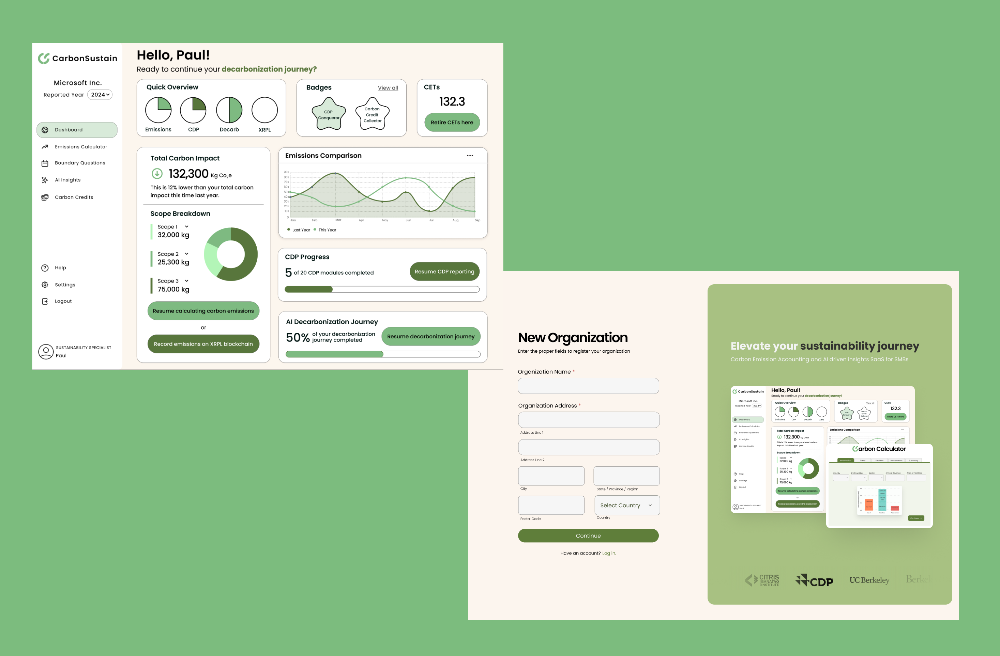
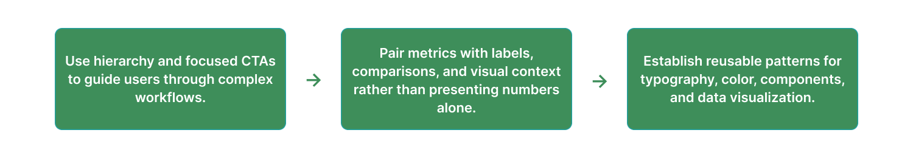
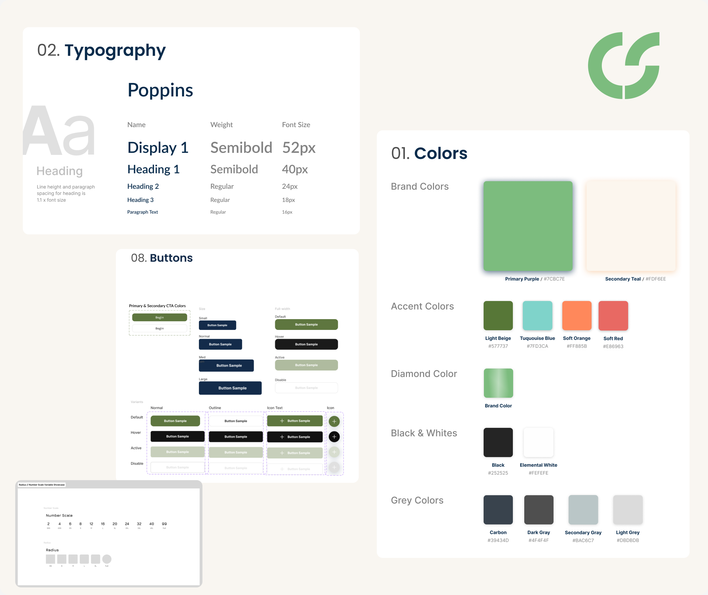
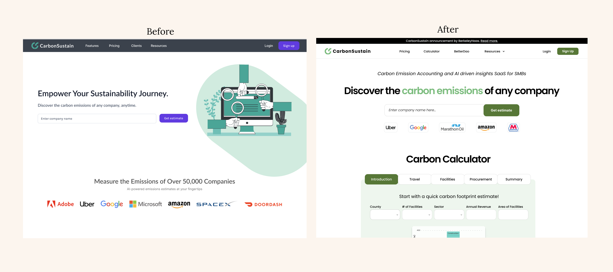
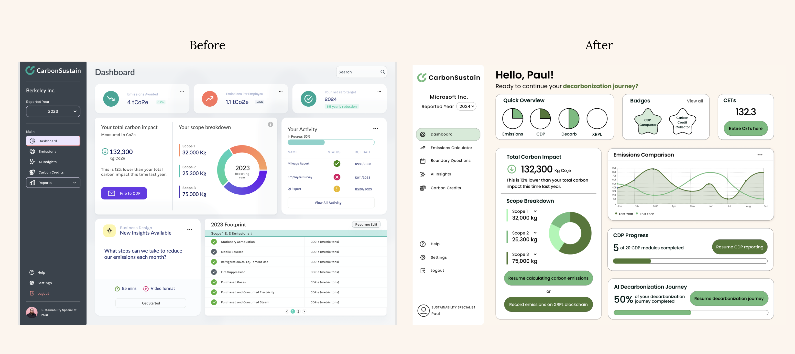

Making complex carbon data easier to understand and act on.

I redesigned key workflows across Carbon Sustain's analytics platform to help businesses navigate emissions data, understand their impact, and take clearer next steps.
Jump to solution ↓Role
Product Designer
UX Research
Timeline
Sept – Dec 2024
Team
4 Designers
1 Client
Scope
Research
IA
Interaction Design
Visual Design
Context
Carbon Sustain helps businesses understand and reduce their carbon footprint.
Carbon Sustain is a B2B carbon analytics platform that helps organizations measure emissions and make more informed sustainability decisions. Our team partnered directly with the founder to improve the experience across the marketing site and core product.
As one of my first client-facing UX projects, I worked across research, information architecture, interaction design, and visual design while balancing user needs with the goals of a growing sustainability platform.
The Problem
Carbon data was available. Understanding what to do with it wasn't.
Carbon Sustain surfaced detailed emissions information, but the experience made it difficult for non-experts to understand the product's value, navigate key workflows, and interpret complex sustainability data.
Unclear Next Steps
Key actions lacked hierarchy, leaving users unsure where to go or what to do next.
Complex Information
Dense carbon metrics lacked enough context to help non-experts understand.
Inconsistent Experience
Fragmented navigation patterns made the platform feel less trustworthy.
Research
Users could understand what their emissions were, but struggled to understand what to do next.
We spoke with 18 sustainability professionals across companies and analyst roles to understand how emissions data was reported, interpreted, and used to make decisions. We paired these conversations with competitive analysis and affinity mapping to identify recurring gaps in the experience.
Design Direction
We designed around clarity, guidance, and trust.
Our research shifted the goal from simply displaying carbon data to helping users interpret it. I focused the redesign around three principles that could scale across both the marketing site and product.

Visual System
Creating a foundation for a more consistent product.
To support the redesign, I helped build a visual system using Carbon Sustain's existing brand as a foundation. Reusable typography, color, buttons, and data patterns gave us a consistent language across the marketing site and dashboard.

Accessibility
Designing complex data to work for more people.
Accessibility shaped the visual system from the beginning rather than being treated as a final check. Because Carbon Sustain relies heavily on charts, metrics, and dense sustainability data, I focused on making information legible and understandable without depending on color or visual complexity alone.
Contrast & Legibility
Used accessible contrast for key text, controls, and data while maintaining Carbon Sustain's muted brand palette.
More Than Color
Paired chart colors with labels, values, and contextual cues so users could interpret emissions data without relying on color alone.
Hierarchy & Readability
Established consistent type scales, spacing, and component patterns to make dense dashboards easier to scan and reduce cognitive load.
The Solution
A clearer path from understanding your footprint to acting on it.
I applied these principles across Carbon Sustain's core experience from first discovering the platform to calculating emissions and monitoring progress over time.
Product Discovery
Making Carbon Sustain's value clear from the first interaction.
The original landing page introduced Carbon Sustain without giving users a strong path forward. I reorganized the page around a clearer value proposition, brought the carbon calculator into the primary journey, and simplified navigation so users could quickly understand what the platform offered.

Guided Calculation
Breaking a complex calculation into manageable steps.
Instead of asking users to process every emissions input at once, I separated the calculator into focused categories such as travel, facilities, and procurement. Each step reduced the amount of information users had to process at once while preserving visibility into their overall footprint.
As values are entered, the visualization updates to show how each category contributes to total emissions by turning an abstract CO₂ number into something users can compare and interpret.
Carbon Insights
Turning emissions data into a dashboard users could actually scan.
The original dashboard presented several metrics with competing visual weight. I reorganized the experience around a clearer hierarchy: overall impact first, followed by emissions breakdowns, comparisons, progress, and recommended next steps.
Charts were paired with labels and contextual cues so users could understand the state of their footprint without relying on raw numbers or color alone.

Outcome
Clearer navigation. More understandable carbon data.
30%
Comprehension improved by 30% across key navigation tasks, measured through post-task comprehension questions.
Reflection
The project that taught me how different designing for real users feels.
Carbon Sustain was my first experience designing for a real client, and it taught me that good design wasn't just about making an interface feel cleaner. Every decision had to balance what users needed, what the business wanted to communicate, and what could realistically work within the product.
Looking back, I would have spent more time testing the calculator and dashboard with users at different levels of sustainability expertise. But the project gave me my first experience taking messy research, turning it into a clear design direction, and carrying that thinking through an entire product experience.